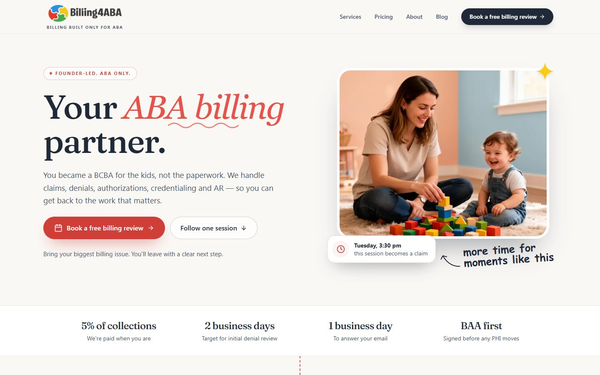
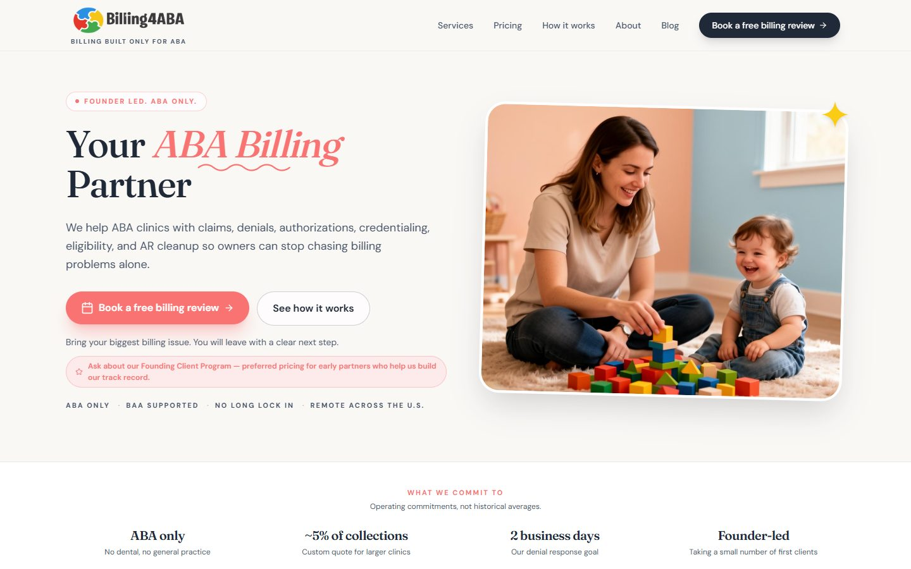
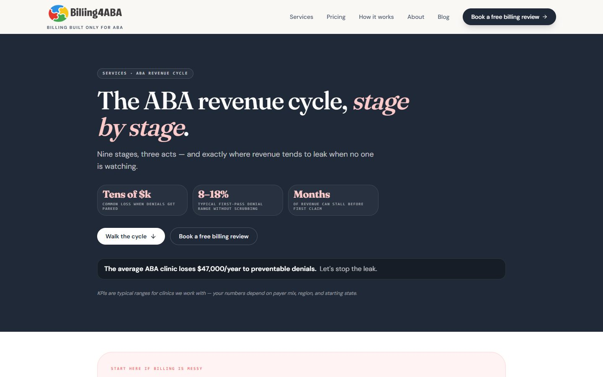
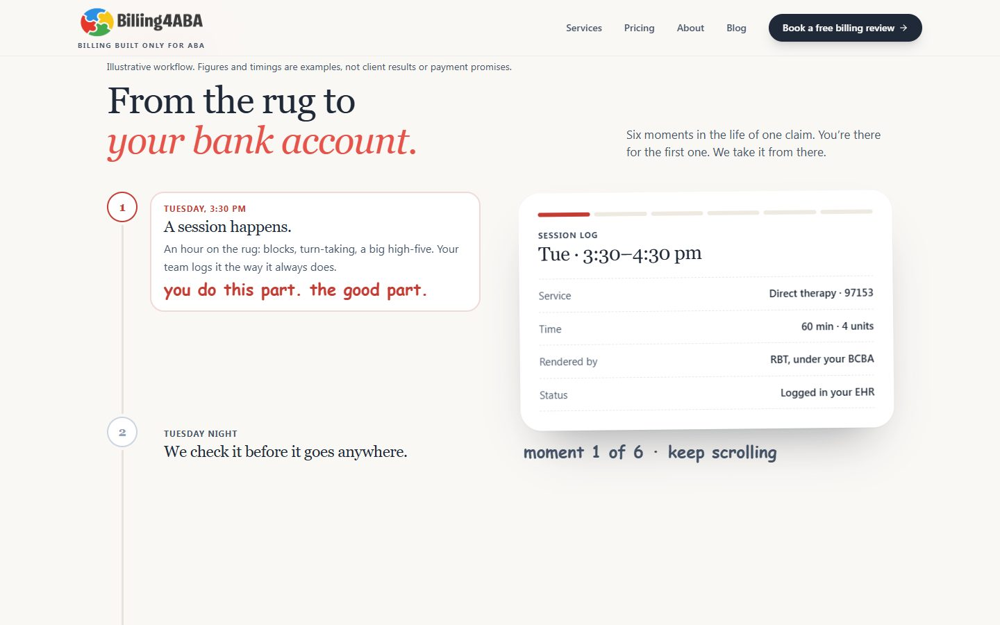
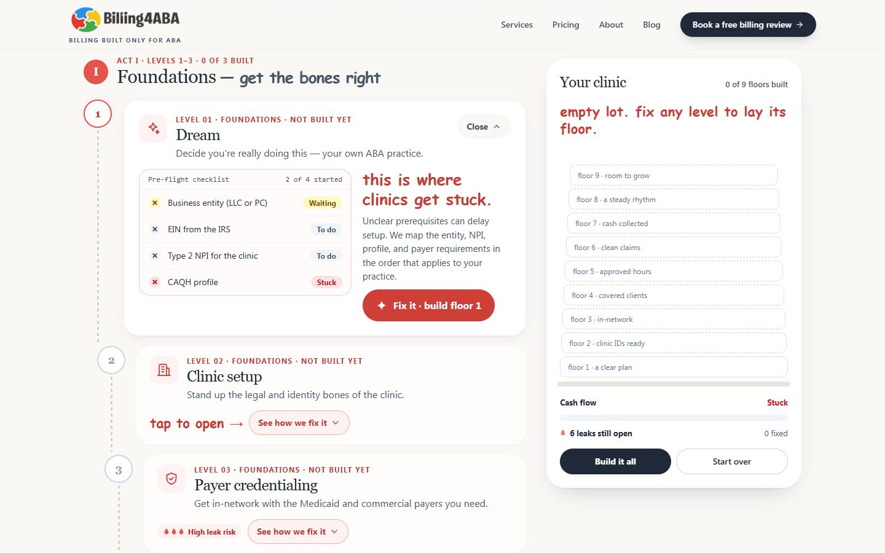
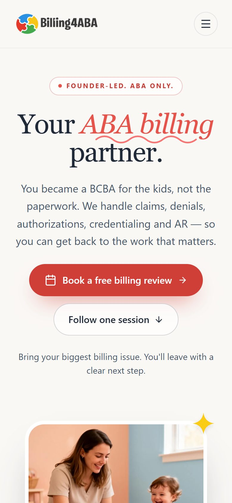

01Founder-owned business · Founder, copy, design & build
For the kids, not the paperwork.
One line from the hero, followed from the June launch to today’s site.
Scroll: write, design, build
Billing4ABA is Ahsan’s own company. Numbers on the site are operating targets, not client results.

01Write
Start with the owner’s reason.
The June launch line listed every service. It never said why the reader does this work.
The first draft: We help ABA clinics with claims, denials, authorizations, credentialing, eligibility, and AR cleanup so owners can stop chasing billing problems alone.
AK · 01A list isn’t a reason.
Then open with the kids.
The reader is a BCBA first. The services can follow the reason.
The rewrite: You became a BCBA for the kids, not the paperwork. We handle claims, denials, authorizations, credentialing and AR — so you can get back to the work that matters.
02Design
Give the line its place.
Grey boxes first. The line sits under the name, the session photo beside it.
AK · 02Where an owner starts reading.
Keep the warmth.
Cream ground, coral accents and the launch photo of a child at play.
03Build
Ship it to the live site.
Live at billing4aba.com. Every change goes to a hidden preview first.
AK · 03Live, and still growing.

- 01Write
- 02Design
- 03Build
I wrote it, designed it and built it.
From the first click to the front desk, you talk to me.
Walk the journey ↗For the curiousThe video, the full kit, every version and how it was checked
- Project
- Founder-owned business, live at billing4aba.com
- Role
- Founder · copy, design direction & build
- Deliverable
- Business website with 10 guides
- Tools
- TanStack Start · React · TypeScript · Tailwind
Walkthrough
Billing4ABA in 43 seconds
A 43-second captioned tour of the finished work. Recorded from the site’s public preview build; no sound.
The receipts
The brief
How does a new billing company earn the trust of a clinic owner who has been let down by a biller before?
ABA clinic owners are BCBAs first. Most came into the work for the children, and billing is the part that keeps them up at night: claims, denials, authorizations, credentialing and unpaid AR. A new company can’t lean on years of testimonials, so the site has to show how the work runs, in the reader’s own words.
- 01Sound like a person, not a vendor
- 02Make a nine-stage revenue cycle easy to follow
- 03Promise only what can be kept
All 5 versionsFrom launch build to a site that explains itself.
The June launch build stayed live until October. Then came a full review, a refresh that kept the original look, and a run of focused releases.
Launch build
“Your ABA Billing Partner”
A warm, single-scroll homepage with a services list, four steps from the first call and the first guides. The services page leaned on an unsourced loss figure.

Hero 
Services: a figure with no source Review fixes and a calmer homepage
A full site review: honest claims, a footer on every page, lighter images and a darker coral for readable text and buttons. The homepage kept its hero and got calmer structure.
- Footer on every page
- Hero introduction rewritten around the reader
- Unsourced figures removed
The services journey
Services became a path of nine levels in three acts, with a cycle ring in the hero. Every guide took on the color of its act.
- Nine-level services journey
- Cycle ring
- Guides colored by act
One session, open levels, more guides
The homepage started following one session from the rug to the bank. Every services level opened on its own, six new guides arrived with animated explainers, and About became one story in five short chapters.
- Follow one session
- What’s hurting? tiles
- Six new guides
- About in five chapters
- Locked levels → open in any order
Faster on phones, calendar first
Booking now shows the calendar first, phones get a lighter page, and the trust copy is tighter.
- Calendar-first booking
- Lighter page on phones
- Trust copy
Hero 
The homepage story: one session, six moments
Palette & typeKeep the warmth, add the structure.
Three new homepage directions were tried and dropped: they felt crowded and corporate, and lost the warmth that work with children deserves. The refresh kept the original hero and cream ground, and put the effort into hierarchy and calm, visual explanations.
#1F2937Headlines and body text#E5534BDisplay accent and Act I#FAF8F5Reading ground#2563EBAct II, operations#16A34AAct III, scale

One session, start to finish
The homepage follows a single Tuesday therapy session from the rug to the bank: checked, sent, denial worked, paid, and reported in a Monday note.
A journey you can join anywhere
Services is a path of nine levels in three acts, each in a logo color. Every level opens on its own, because an owner who only needs authorizations shouldn’t have to click through credentialing first.
Show the problem, then the fix
Each level shows a problem board with made-up example data, labelled as such, then the fix and who does what. A side panel builds the clinic floor by floor as levels are cleared.
Build & checksSmall server, preview first.
Billing4ABA runs on its own server. Every change goes to a preview, hidden from search engines, and goes live only after it’s approved.
- TanStack Start
- React 19
- TypeScript
- Tailwind CSS 4
- Node behind nginx
- GitHub Pages preview
What it does
- A services journey of nine levels, open in any order, with a cycle ring that links to each one
- A homepage story that follows one session from therapy to payment
- “What’s hurting?” tiles that suggest the first steps
- Ten guides with animated explainers, each tied to one stage of the cycle
- Calendar-first booking for a free billing review
How it was checked
- A preview of every page, hidden from search engines, before anything goes live
- A content review that removed unsourced figures and any hint of existing clients
- Self-hosted fonts, WebP images and a lighter page on phones
- A guide stays unpublished until its codes are checked against the official CPT code book
Ahsan Khan: founder, positioning, copy, design direction and build. Billing4ABA is his own company, and he keeps building on it.
No client results, revenue or denial rates are claimed. Prices and response times on the site are operating targets, and the example data on the services boards is made up and labelled as such.